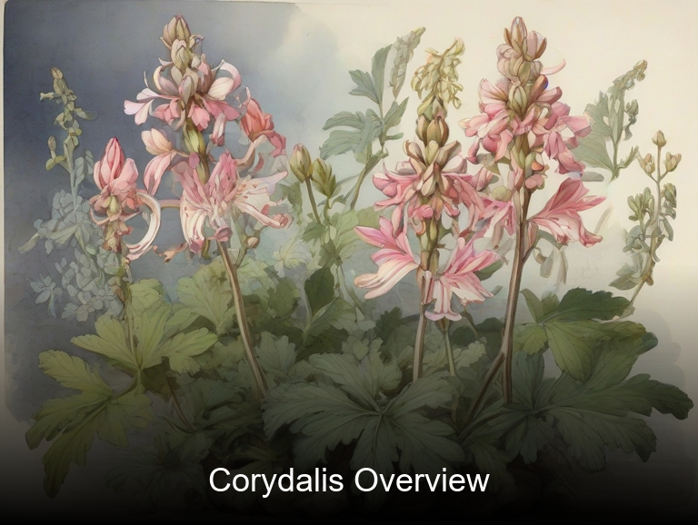
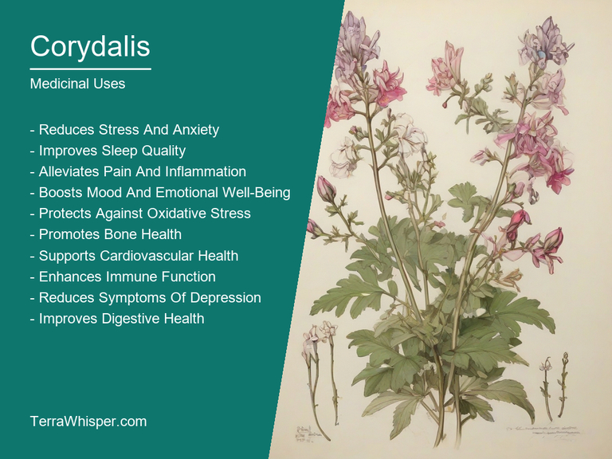
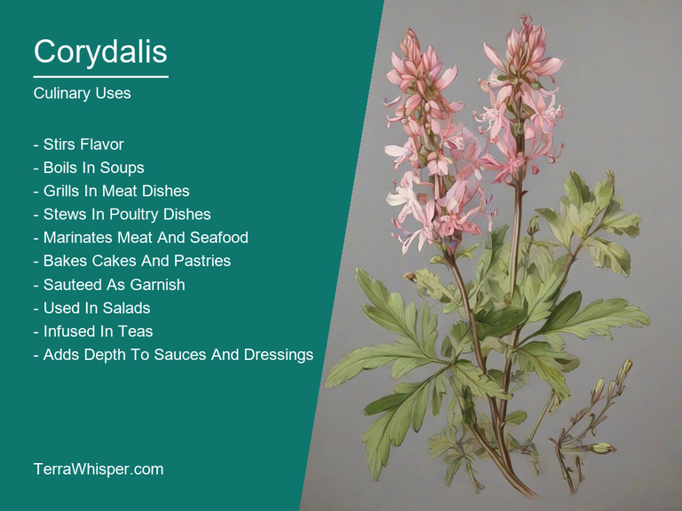
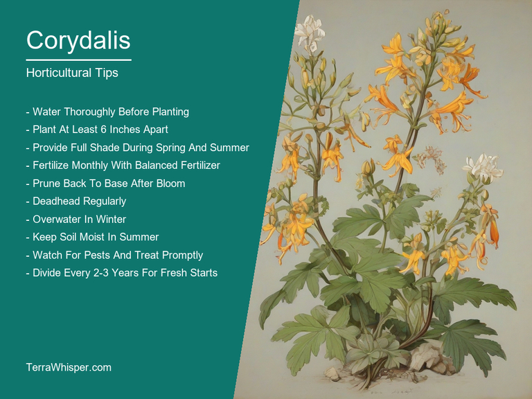
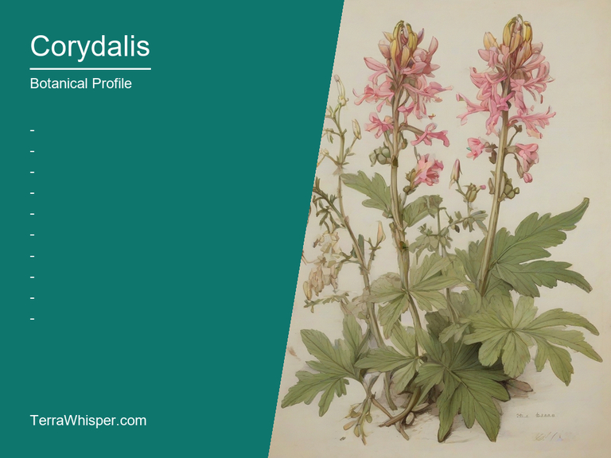
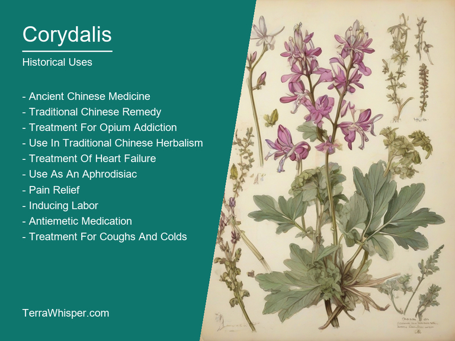

Corydalis, scientifically known as Corydalis yanhusuo, is an exceptional perennial herb with significant medicinal and culinary applications, horticultural value, ornamental appeal, and a rich history spanning several centuries. As a medicinal plant, it has been traditionally used to treat various health issues such as asthma, bronchitis, coughs, and even cancer, mainly due to its alkaloid content. In culinary contexts, Corydalis is valued for its pungent taste that can enhance the flavor of certain dishes.
When it comes to horticulture and ornamental aspects, Corydalis yanhusuo stands out with its attractive flowers, which come in various colors like blue, purple, white, pink, and yellow. The plant grows best in partially shaded areas and thrives in well-drained soil. Gardeners often use it as a ground cover or to create borders around flower beds due to its low height, versatility, and hardiness. Corydalis yanhusuo's flowers also attract pollinators like bees, hummingbirds, and butterflies, contributing positively to the biodiversity of gardens and landscapes.
As for botanical and historical aspects, this species originated from Central and South China, where it has been used for centuries in traditional Chinese medicine practices. It was first documented during the Ming Dynasty and remained a vital part of the country's pharmacopeia until recently. Corydalis yanhusuo is known to contain several alkaloids, such as tetrahydropalmatine and protopine, which may possess anti-inflammatory, analgesic, and sedative properties. In recent years, scientific studies have also investigated the potential of these compounds for treating certain cancers, pain management, and other medical applications.
In this article, you will discover what are the medicinal and culinary uses of corydalis. Then, you'll learn how to cultivate it, what is its botanical profile, and how it was used historically.
Corydalis (Corydalis yanhusuo) has many health benefits, such as easing pain, treating inflammation, and aiding in digestion. This plant is known to help with numerous medical issues including neurological disorders, anxiety, insomnia, depression, menstrual cramps, migraines, and muscle spasms among other things. As an herbal supplement or home remedy, Corydalis offers potential for relief from a wide range of health conditions.
The following illustration lists the most important uses of corydalis in medicine.

The medicinal constituents in Corydalis are primarily alkaloids like tetrahydroalstonine, protopine, and corydaline, which help bring on its healing effects. These alkaloids exhibit anti-inflammatory, antidepressant, and analgesic properties that contribute to the plant's medicinal value.
The most commonly used parts of Corydalis plants are its tubers (underground stems), which hold high concentrations of these beneficial compounds. To extract their medicinal benefits, these tubers can be prepared in various ways depending on local customs and traditions. For instance, they may be dried and ground into a powder for consumption as a tea or decoction, or processed into tinctures for oral intake. Alternatively, the plant's roots can also be used fresh as they have medicinal properties similar to those of the tubers.
While Corydalis (Corydalis yanhusuo) generally provides numerous health benefits, it is important to note that certain side effects may occur in some individuals. Some common adverse reactions include dizziness, nausea, dry mouth, constipation, and drowsiness. It's crucial for users to be aware of these potential risks before incorporating Corydalis into their wellness regimen.
To ensure the safety and efficacy of using Corydalis as a medicinal aid, certain precautions should always be observed. Firstly, it is essential to consult a health care professional prior to starting any new herbal supplement or treatment plan, particularly for those with existing medical conditions or taking other medications. Secondly, one must carefully follow dosage instructions and avoid overconsumption since exceeding recommended amounts may increase the risk of side effects. Lastly, pregnant women should exercise caution when using Corydalis, as some of its components might have adverse effects on fetal development and breastfeeding mothers are advised to discuss usage with their healthcare provider before incorporating it into their routine.
Culinary uses of Corydalis (Corydalis yanhusuo) are limited due to its potent ingredients but the plant has been employed for culinary purposes in traditional Chinese medicine and cuisine. It is often used as an additive to soups, stews, and stir-fry dishes to impart unique flavors that help elevate the overall taste of the meal.
The following illustration lists the most common uses of corydalis for culinary purposes.

The flavor profile of Corydalis (Corydalis yanhusuo) is primarily attributed to its active compounds such as alkaloids, which can produce both sweet and bitter notes in food preparations depending on how it's used. Its distinct taste can be described as a combination of bitterness, spiciness, and earthy undertones – hence creating rich culinary experiences for the consumer.
The edible parts of Corydalis (Corydalis yanhusuo) mainly include its rootstocks, which hold its characteristic flavors. While its other plant parts are not typically used in cooking, they may contain harmful chemicals or substances that make them unsafe for human consumption. It is essential to use only the recommended edible portions when incorporating Corydalis into culinary preparations.
To ensure a safe and enjoyable culinary experience with Corydalis (Corydalis yanhusuo), keep in mind some tips while cooking. Firstly, prepare a fresh supply of plant materials each time to avoid potential contaminants. Secondly, use it sparingly – only a small amount is needed to enhance the flavors and shouldn't be used as a primary ingredient. Lastly, store away from heat or direct sunlight to retain its original potency.
While Corydalis (Corydalis yanhusuo) holds some potential health benefits when consumed in small amounts, it is important to note that overconsumption can lead to several side effects and toxicity. These may include nausea, vomiting, constipation, dizziness, and even hallucinations. Due to its strong alkaloids, pregnant women or those with specific health conditions are advised not to use Corydalis without consulting a medical professional.
Corydalis yanhusuo, a horticultural beauty with its vibrant blue flowers, has specific growth requirements. Optimal conditions include well-draining soils rich in organic matter at temperatures ranging from 2 to 7 °C in mild regions and slightly colder areas where it can thrive in cold weather conditions down to -10 °C. Sunlight exposure is essential for its development, preferring partial shade with occasional sunny spells.
The following illustration lists the most important tips to cutlitvate corydalis.

Planting Corydalis yanhusuo should be done during the spring or fall season when temperatures are mild and soil is still moist after the winter months. Select a location with proper drainage to avoid waterlogging. Plant at a depth of 10-15 cm, ensuring the root ball is fully covered but allowing space for a slightly deeper growth. Space each plant 20-30 cm apart to allow proper spacing and air circulation between plants.
To ensure healthy growth and flowering, Corydalis yanhusuo requires regular maintenance throughout its life cycle. Water the plant regularly during dry periods, keeping the soil moist but not waterlogged. Fertilizing is essential for optimal growth; use a balanced fertilizer with equal parts of nitrogen, phosphorus, and potassium (NPK) once or twice per year in spring and summer. Prune dead or damaged stems in early spring to encourage new growth.
Harvesting the flowers can be done when they are at their peak bloom, typically occurring around June through August. Cut the flower stalks above the first set of leaves or nodes using a sharp pair of scissors or garden shears. Allow the cut stems to air dry for a few days in a cool, dark location before removing any remaining leaves and arranging them in a vase with water.
As with any plant species, pests and diseases can affect Corydalis yanhusuo's growth and health. Keep an eye out for signs of damage such as distorted or discolored foliage, wilting flowers, or the presence of tiny insects on the leaves. Common issues include aphids, whiteflies, and spider mites. To manage pests, use organic methods like neem oil or insecticidal soap for prevention or treat with specific targeted remedies if necessary.
Corydalis, with botanical name Corydalis yanhusuo, belongs to the domain Eukarya, kingdom Plantae, phylum Magnoliophyta, class Magnoliopsida, order Fumariales, family Papaveraceae, genus Corydalis and species yanhusuo. Common names include Yanhusuo, Yan Hu Suo, and Chinese Corydalis.
The following illustration display the botanical profile of corydalis.

There are a few variants of Corydalis yanhusuo with slight differences in their appearance. One variant is Corydalis yanhusuo var. chunii, which features darker flowers compared to the standard Corydalis yanhusuo. Another difference includes slight changes in the leaf shape and size.
Corydalis yanhusuo typically has glabrous stems that grow up to around 60 centimeters tall. The leaves are compound, divided into several lobed, slightly hairy leaflets. The flowers are bell-shaped and feature an attractive array of colors such as purple, blue, and pink depending on the variant.
Corydalis yanhusuo is native to China and can be found in various mountain regions and forest areas at elevations between 200 and 3500 meters above sea level. It prefers temperate and subtropical climates with well-drained soil, partial shade, and adequate moisture levels.
Corydalis yanhusuo's life cycle involves a series of events that start from seed germination. Once germinated, it produces leaves and flowers before maturing into fruit containing seeds. The plant propagates itself through both self-seeding and vegetative reproduction, such as the production of underground stems called rhizomes.
Corydalis yanhusuo has a long history of usage in traditional Chinese medicine dating back thousands of years. It is part of a diverse family known as the poppy plants and is native to various regions in Asia, including China. Known for its therapeutic properties, this herbaceous perennial plant has been used to treat numerous health conditions like muscle spasms, insomnia, gastrointestinal issues, and even addiction withdrawal symptoms. The roots of Corydalis yanhusuo are the primary source of its medicinal benefits, which have led to its inclusion in various traditional Chinese medicinal recipes and formulations.
The following illustration lists the most well known historical uses of corydalis.

Apart from health and medicinal uses, Corydalis yanhusuo has also been associated with a mystical aspect in ancient China. The plant has historically been utilized as an essential component of divination rituals for its supposed ability to reveal hidden information. The roots were often ground into powder and mixed with other elements before being blown away by the wind, which was believed to carry this spiritual information. Diviners would interpret the shapes and patterns formed by the floating particles to discern crucial insights about the future or make important decisions.
Beyond its medicinal and divination uses, Corydalis yanhusuo has also been entwined with numerous legends in Chinese folklore. A notable legend involves a beautiful young woman named Yan Huo who was said to have possessed extraordinary healing powers. She used the plant as a secret remedy for her people's ailments and became known as the "Queen of Herbs." In some stories, it is believed that she even saved an emperor from a deadly illness by using Corydalis yanhusuo as part of her treatment. This legend has helped cement the plant's reputation in Chinese culture and contributed to its enduring significance throughout history.